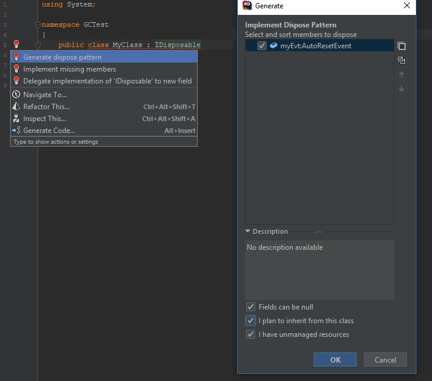

Resource management in .NET
Mechanisms
- Explicit - Disposal
- Implicit - Garbage collection
Disposal
Used to dispose unmanaged resources, like file handles,
locks, network connections...
IDisposable
public interface IDisposable {
void Dispose();
}
using
using (FileStream fs = new FileStream("file.txt", FileMode.Open))
{
// write to file
}
↓
FileStream fs = new FileStream("file.txt", FileMode.Open);
try {
// write to file
} finally {
if (fs != null) ((IDisposable) fs).Dispose();
}
Basic dispose pattern
sealed class Demo : IDisposable
{
public void Dispose()
{
// ...
}
}
Good for sealed classes
Dispose rules
- Cannot recover object after disposal
- Methods other than Dispose() throws ObjectDisposedException
- It's perfectly safe to call Dispose() multiple times
- Object propagates Dispose() to all disposable fields
Close/Stop vs Dispose
- Some classes provide Close/Stop method as well
- Dispose doesn't allow to recover while Close/Stop does
When to dispose resource?
If you have finished with an object whose type implements IDisposable then call Dispose() on it
When to not perform resource disposal?
- Resource is managed by other object
- We'll need that resource later
Unsubscribe event handlers
public class Demo : IDisposable
{
private Subject subject;
Demo(Subject sub)
{
subject = sub;
subject.OnEvent += OnEventHandler;
}
private void OnEventHandler(object sender, OnEventArgs args) { ... }
public void Dispose()
{
subject.OnEvent -= OnEventHandler;
}
}
Define IsDisposed property
public class Demo : IDisposable
{
public bool IsDisposed { get; private set; }
public void SomeMethod()
{
if (IsDisposed) throw new ObjectDisposedException("");
}
public void Dispose()
{
IsDisposed = true;
}
}
Garbage collection
public void Test()
{
byte[] array = new byte[1000];
// ...
}
- array will be removed soon
- ... but actually we don't know when
Garbage collection
- Performed periodically
- Performed when needed (low memory, many memory allocations, timeout)
Garbage collector
Tries to balance garbage collection time and total memory usage
How GC determines that object can be removed?
- There are no roots which point directly or indirectly to that object
- Roots can be:
- Local variables
- Static fields
- Objects in finalizer queue
Unreachable references
class UnreachableRefs
{
private Dependency dep;
UnreachableRefs(Dependency d)
{
dep = d;
}
static void Test(Dependency d)
{
new UnreachableRefs(d);
}
static void Main(string[] args) {
Dependency d = new Dependency();
Test(d);
}
}
Cyclic dependencies
public class CyclicDeps
{
private CyclicDeps other;
public CyclicDeps() { }
public CyclicDeps(CyclicDeps cd)
{
other = cd;
cd.other = this;
}
}
Finalizer
class Test
{
~Test()
{
// ...
}
}
- Cannot be public or static
- Cannot have parameters
- Cannot call base class
Finalizer
- If object doesn't have finalizer, it's collected immediately
- Otherwise, it's queued in special Finalizer queue and collected when Finalizer thread wakes up
Finalizer issues
- May affect performance
- Extends object's lifecycle
- Called in unpredictable order
- Cannot block or throw any exceptions
Implementation hints
- Execute it quickly
- Never obtain any locks
- Don't call any other 'finalizable' objects
- Don't throw exceptions
- Finalizer may be called even when constructor thrown exception
Full Dispose pattern
public class MyClass : IDisposable
{
private AutoResetEvent myEvt;
public void Dispose()
{
Dispose(true);
GC.SuppressFinalize(this);
}
~MyClass()
{
Dispose(false);
}
protected virtual void Dispose(bool disposing)
{
// ...
}
}
Full Dispose pattern
protected virtual void Dispose(bool disposing)
{
ReleaseUnmanagedResources();
if (disposing)
{
myEvt?.Dispose();
}
}
private void ReleaseUnmanagedResources()
{
// TODO release unmanaged resources here
}
Generate Dispose pattern

So how actually GC works?
- Generational mark-and-compact GC
- Monitors managed heap
- Being activated after memory allocation (by new operator) or after exceeding allocated memory
limits, or ...
- Can be activated manually by System.GC.Collect()
- Can suspend all threads
So how actually GC works?
- Looks for unreachable objects and marks them as "to remove"
- Removes them immediately or adds to Finalizer queue (depending on finalizer existence)
- Moves all "live" object to the beginning of the heap
Why heap is compacted?
- Avoid memory fragmentation
- Easy and fast memory allocation
Generations
- GC organizes managed heap into 3 generations (Gen0, Gen1 and Gen2)
- Newly allocated objects are assigned to Gen0
- Objects which outlive first garbage collection are moved to Gen1
- Objects which outlive second garbage collection are moved to Gen2
Generations
- Garbage collection for Gen0 and Gen1 is performed frequently and very quickly
- Gen0 and Gen1 heap sizes are small (up to few MB)
- Gen2 heap size is unlimited
- Garbage collection for Gen2 is performed less frequently
Large object heap
- Contains objects that are 85,000 bytes or larger
- Isn't compacted by default (possible slow allocations and fragmentation)
- Below code can help:
GCSettings.LargeObjectHeapCompactionMode =
GCLargeObjectHeapCompactionMode.CompactOnce;
Background Garbage collection
- GC suspends all threads for collecting Gen0 and Gen1
- GC tries to NOT suspend all threads for collecting Gen2
GC.AddMemoryPressure() and GC.RemoveMemoryPressure()
- GC monitors only managed objects
- Application can inform GC about allocated unmanaged memory
GC.Collect()
- Requests to perform garbage collection
- Calling this method may unnecessary promote objects from Gen0 to Gen1 (and from Gen1 to Gen2)
- General hint: trust GC
- Exceptions:
- Application suspended for a long time
- Testing finalizers
Tunning GC - GCSettings.LatencyMode
- GCLatencyMode.Interactive
- GCLatencyMode.LowLatency
References
- C# 6.0 in a Nutshell, 6th Edition - Joseph Albahari, Ben Albahari
- DotMemory video tutorials on YouTube